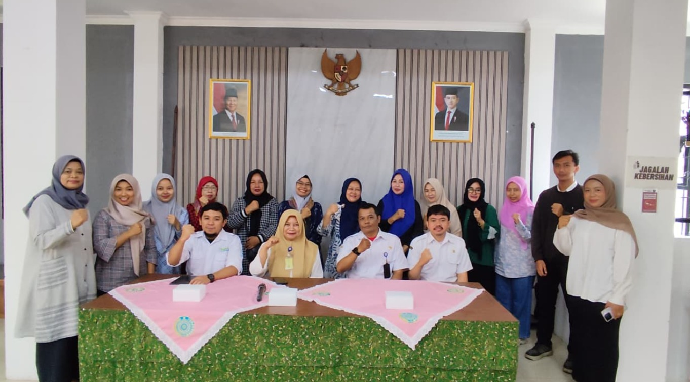

Tentang Kami
Selamat datang di halaman resmi Kesejahteraan Sosial Kelurahan Cigereleng. Halaman ini bertujuan untuk memberikan informasi terkait program, kegiatan, dan pelayanan kesejahteraan sosial bagi masyarakat Kelurahan Cigereleng.
Kami berkomitmen untuk melayani dan mendukung kesejahteraan seluruh warga masyarakat kami.
Layanan Kami
✅ Pendataan Warga Kurang Mampu
✅ Bantuan Sosial
✅ Layanan Pengaduan Sosial
✅ Informasi Program Kesejahteraan
✅ Surat Pengantar & Permohonan
✍️ Ajukan Permohonan / Lapor
Silakan klik tombol di bawah ini untuk mengisi formulir layanan warga.
Data yang Bapak/Ibu isi akan langsung diterima oleh petugas kelurahan.
✅ Setelah selesai mengisi, akan muncul pesan konfirmasi "Terima Kasih" — itu tandanya data sudah masuk ke sistem kami. Terima kasih atas partisipasi Bapak/Ibu!
📝 Buka Formulir Warga
📸 Galeri Kegiatan

Kegiatan Posyandu Cigereleng

Kegiatan PKK Kelurahan

Monev Dashat